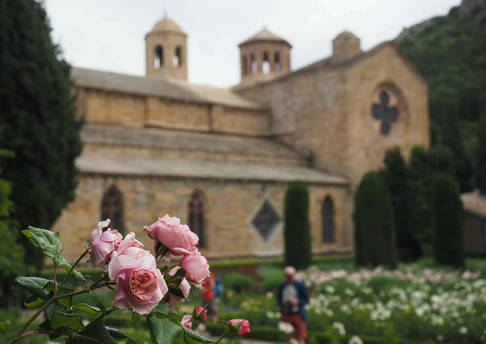

~13 km · Cistercien
Rose en pierre rose, jardins de 2 500 roses, 40 ha de vignes AOC — le 2e site le plus visité d'Occitanie. [67]
€14–€29 · 10h–18h avr-juin
La Table de Fontfroide sur place
La Table de Fontfroide sur place